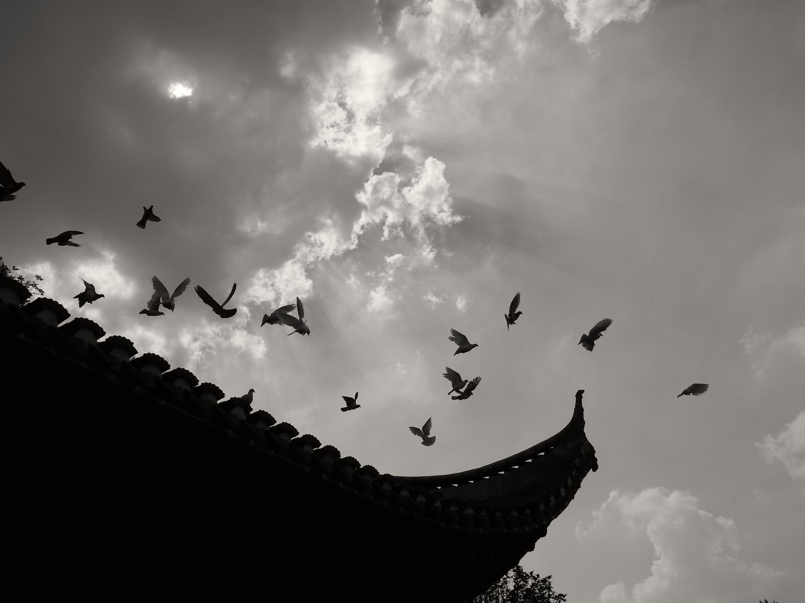
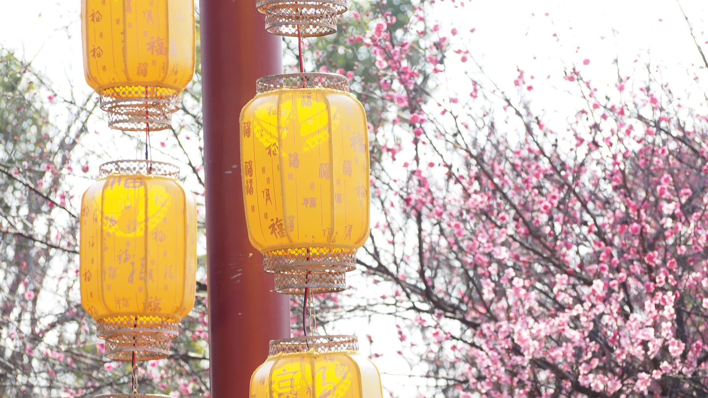
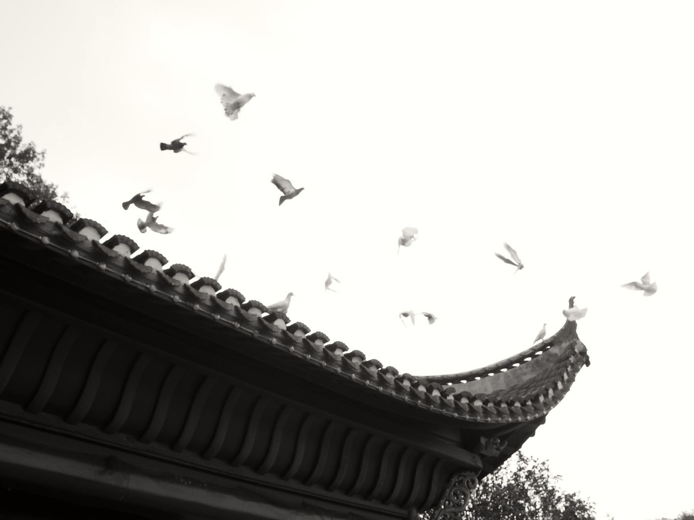
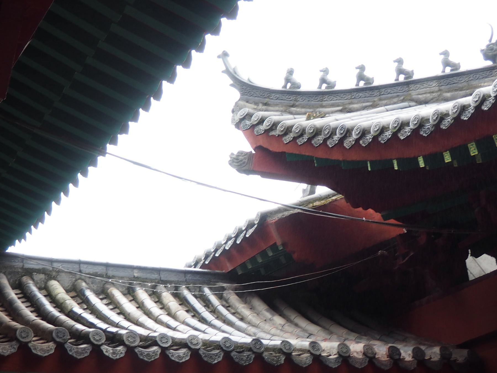
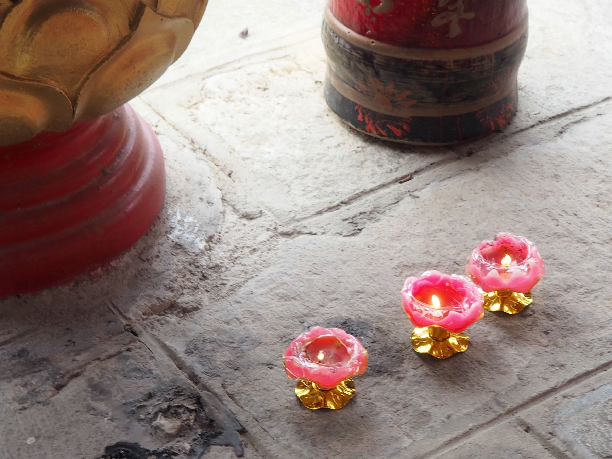

逆光的灯笼Lanterns, backlit
TEMPLE — Under the Eaves
屋檐把天空切成一条缝，鸟从缝里穿过去。
香炉前的金色莲花摆得很整齐，风一吹，枝上的红灯笼就跟着晃。
这些庙我前后去过几次，每次都在同一个位置停下来——等那束光从瓦缝里落下来。
The eaves cut the sky into a slit, and the birds pass through it. The golden lotus flowers stand in neat rows before the incense burner; when the wind comes, the red lanterns move with it. I have photographed these temples several times and always stop in the same place — waiting for the light to come down between the tiles.

等一束光落下来







初